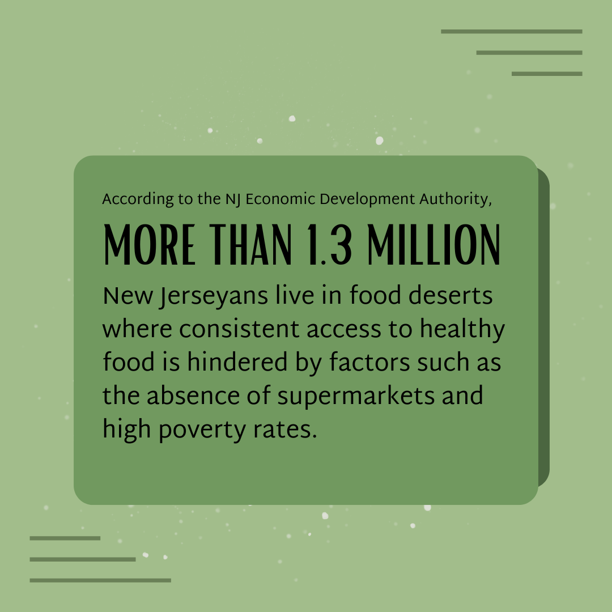

Food Apartheids in Passaic, New Jersey
By Melissa Reyes' 25, Dartmouth College
A food apartheid refers to how...
New Jersey Food Insecurity Compared by Race and Ethnicity
Latinx
Black
Multiple or Other
White
New Jersey Average
Hover to see how many New Jerseyans live in a "food desert."

"Hunger and Its Solutions in New Jersey," Robert Wood Johnson Foundation and Food Research and Action Center, 2022.
References